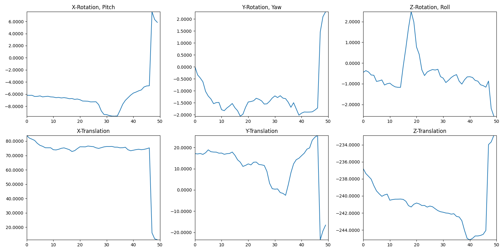

Real-Time Camera Pose Estimator#
This program provides a solution for estimating the 6-DoF (Degrees of Freedom) camera pose, which includes position and orientation relative to a global coordinate system defined by a chessboard pattern. It operates in real-time.
—
Prerequisites#
- Hardware Requirements
Camera: Basler camera.
Chessboard Pattern: A printed or projected chessboard pattern with known dimensions.
- Software Requirements
Pylon SDK: Required for connecting the camera to the computer.
Download it here: Pylon Viewer.
—
Installation#
Clone the repository by using git clone with the repository link. .. code-block:: bash
git clone YunhyeokHan/PoseEstimator.git
(Optional) Create a Python 3.9 environment by using conda create command with the name PoseEstimator and Python version 3.9. .. code-block:: bash
conda create –name PoseEstimator python=3.9
Install the required Python libraries by using pip install with the requirements.txt file. .. code-block:: bash
pip install -r requirements.txt
—
Usage#
Camera Calibration
Before running the pose estimation, the camera must be calibrated using a chessboard pattern.
Start the calibration process by running the camera calibrator script and providing arguments for the checkerboard dimensions, square size, and exposure time.
Define the number of corner points in the rows and columns of the pattern (
--checkerboard <rows> <columns>).Square size: Specify the size of each square on the chessboard in millimeters (
--square_size <size>).Exposure time: Set the camera exposure time in microseconds (
--exposure_time <value>).
python PoseEstimator/camera_calibrator.py --checkerboard 7 5 --square_size 10 --exposure_time 20000
Place the chessboard in the camera’s view and verify that all corner points are detected. The program will display real-time feedback.

Press Spacebar to save detected points for calibration. Move the chessboard to different positions and orientations, capturing sufficient data points.
Press ESC to end the capture session. The program will perform intrinsic camera calibration and save the results for future use.
—
Pose Estimation
Once the camera is calibrated, you can run the pose estimation program.
Start the pose estimator by running the pose estimation script with the same arguments as the calibration process.
Number of corner points in the rows and columns of the pattern (
--checkerboard <rows> <columns>).Square size: Specify the size of each square on the chessboard in millimeters (
--square_size <size>).Exposure time: Set the camera exposure time in microseconds (
--exposure_time <value>).
python PoseEstimator/pose_estimator.py --checkerboard 7 5 --square_size 10 --exposure_time 20000
The program will display real-time camera feed and calculate the 6-DoF pose relative to the chessboard pattern. Ensure that the pattern is visible to the camera and its corners are detected. Position/orientation of camera is defined with respect to Global XYZ axis of chessboard pattern (XYZ axes are depicted as R G B in the image).

{kind=link}
{kind=link}
Press ESC to terminate the program.
—
Notes#
Calibration results are saved automatically and reused for pose estimation.
Ensure the chessboard pattern dimensions and exposure settings are correctly provided in all steps for accurate results.
For real-time performance, use a compatible camera and a well-lit environment.